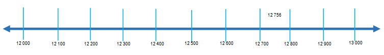
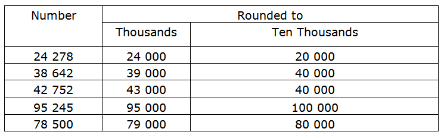

Explore and Discover!
Explore and Discover!
The diameter of the earth at the equator is about 12 756 kilometer.
About how many thousand kilometers is diameter of the Earth at the equator?
You can find the answer by rounding 12 756 to the nearest thousands.
Study the number line below.
To which number is 12 756 closer, 12 000 or 13 000?
Since 12 756 is closer to 13 000, you can say that 12 756 becomes 13 000 when rounded to the nearest thousands. Hence, the diameter of Earth at the equator is about 13 000 kilometers.
Here are the other examples. Study.
• Rule for rounding to the nearest Thousand
Look at the number in hundred’s place
For 0, 1, 2, 3, or 4 we round down
For 5, 6, 7, 8, or 9 we round up (that is add +1)
Examples:
Let’s round 17 389 to the nearest thousand.
Since the hundred place is 3, we round down.
So, we round 17 389 to 17000.
Let’s round 17 589 to the nearest thousand.
Since the thousand place is 5, we round up (that is add +1).
So, we round 17589 to 18 000.
• Rule for rounding to the nearest Ten Thousand
Look at the number in thousand’s place
For 0, 1, 2, 3, or 4 we round down
For 5, 6, 7, 8, or 9 we round up (that is add +1)
Examples:
Let’s Round 34 398 to the nearest ten thousand.
Since the hundred place is 3, we round down.
So, we round 34 389 to 34 000.
Let’s round 35 670 to the nearest ten thousand.
Since the thousand place is 5, we round up (that is add +1).
So, we round 35 670 to 36 000.
Round each number to the place value of the underlined digit.
1. 67 436 67 000
2. 34 673 30 000
3. 87 567 87 600
4. 82 652 80 000
5. 34 982 35 000